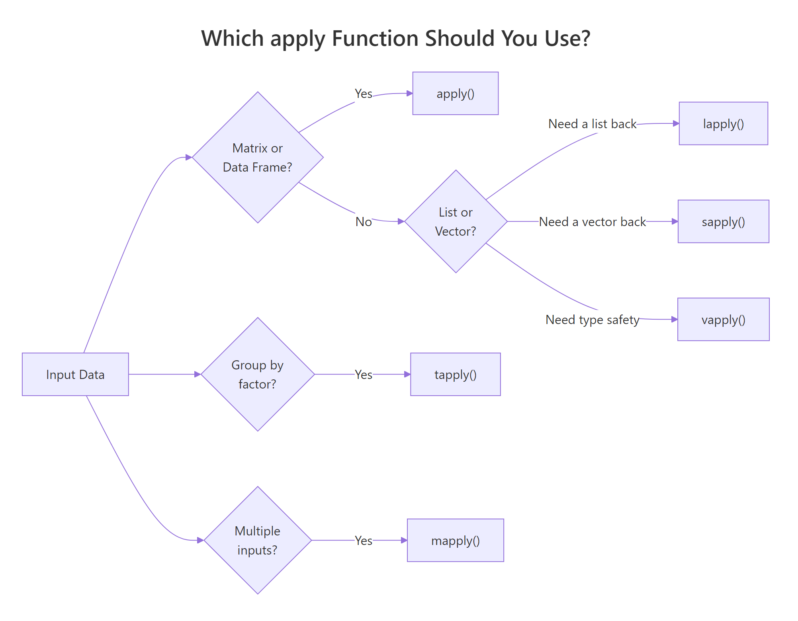

R apply Family Exercises: 12 apply(), lapply(), sapply() Practice Problems, Solved Step-by-Step)
The R apply family, apply(), lapply(), sapply(), vapply(), tapply(), and mapply(), lets you run a function across rows, columns, lists, or groups without writing a single loop. These 12 exercises take you from basic row/column operations to multi-input parallel mapping, each with starter code you can run and a full worked solution.
Which apply Function Should You Use?
The apply family replaces explicit for-loops with a single function call. The tricky part is choosing the right one, each takes a different input shape and returns a different output shape. Here's the cheat sheet you'll need for the exercises below.
| Function | Input | Iterates Over | Returns | Use When |
|---|---|---|---|---|
apply() |
matrix / data frame | rows or columns | vector / matrix | You need row-wise or column-wise operations |
lapply() |
list / vector | each element | always a list | You want predictable list output |
sapply() |
list / vector | each element | vector / matrix (tries to simplify) | Quick interactive exploration |
vapply() |
list / vector | each element | vector / matrix (type-checked) | Production code, type safety |
tapply() |
vector + factor | groups | array | Summarizing data by category |
mapply() |
multiple vectors/lists | elements in parallel | vector / matrix / list | Multiple corresponding inputs |
Let's see how three of these handle the same task, computing column means of mtcars, so you can spot the output differences immediately.
Notice apply() and sapply() both returned named numeric vectors, while lapply() returned a list. That list output from lapply() is actually the safest, it never surprises you by changing shape.
Try it: Use sapply() to get the class of every column in iris. Before you run it, predict: will the result be a vector or a list?
Click to reveal solution
Explanation: Each column's class() returns a single string, so sapply() simplifies the list into a character vector. Since every result is length 1, you get a clean named vector.
How Does apply() Work on Matrices? (Exercises 1–2)
apply() is the only member of the family that takes a MARGIN argument, set it to 1 for rows and 2 for columns. It works best on numeric matrices or data frames where every column is the same type.
Exercise 1: Row-Wise Statistics on a Matrix
Create a 5×4 numeric matrix with matrix(1:20, nrow = 5). Use apply() twice: once to compute the mean of each row, and once to compute the range (max − min) of each row.
Click to reveal solution
Explanation: With MARGIN = 1, apply() feeds each row as a vector to the function. Every row spans from its minimum (column 1) to its maximum (column 4), and since the matrix fills column-by-column, each row has the same range of 15.
Exercise 2: Column-Wise Custom Function
Write a function that computes the coefficient of variation (CV), that's the standard deviation divided by the mean, times 100, and use apply() with MARGIN = 2 to compute the CV for each column of mtcars[, 1:4].
Click to reveal solution
Explanation: MARGIN = 2 means "iterate over columns." The disp column has the highest CV (53.7%), meaning engine displacement varies the most relative to its average. mpg and cyl are more tightly clustered.
apply(airquality, 2, mean, na.rm = TRUE) passes na.rm through to mean() via the ... argument. This is cleaner than pre-filtering with na.omit(), which drops entire rows.Try it: Use apply() to find which column has the largest range (max − min) in airquality[, 1:4]. Remember to pass na.rm = TRUE.
Click to reveal solution
Explanation: Solar.R actually has the largest absolute range (333), not Ozone. The raw range depends on the scale of each variable. If you wanted a scale-free comparison, you'd use the coefficient of variation from Exercise 2.
How Do lapply() and sapply() Differ? (Exercises 3–5)
Both lapply() and sapply() iterate element-by-element over a list or vector. The difference is purely in the output: lapply() always returns a list, while sapply() tries to simplify the result into a vector or matrix. That simplification is convenient in the console but can bite you in scripts.
Exercise 3: String Manipulation with lapply()
Given a list of city-name vectors (one vector per country), use lapply() to collapse each vector into a single comma-separated string.
Click to reveal solution
Explanation: lapply() feeds each element of the list (a character vector of city names) to the anonymous function. paste(collapse = ", ") squashes each vector into a single string. The result is a named list, one string per country.
Exercise 4: sapply() for Quick Column Summaries
Use sapply() on mtcars to count the number of unique values in each column. The result should be a named integer vector.
Click to reveal solution
Explanation: sapply() applied the function to each column and simplified the 11 single-number results into a named integer vector. Columns like vs and am have only 2 unique values (they're binary), while qsec has 30 distinct values across 32 rows.
Exercise 5: When sapply() Surprises You
Apply a function that returns different-length results to a list. Compare what lapply() and sapply() return. Why does sapply() not simplify this time?
Click to reveal solution
Explanation: Here sapply() does simplify, because every result has the same length (2). It stacks them into a 2×3 matrix. The surprise would come if one element returned a different length, then sapply() would silently fall back to a list. That inconsistency is why vapply() exists.
Try it: Use lapply() to split the iris data frame by Species, then check the class and length of the result.
Click to reveal solution
Explanation: split() divides a data frame by a factor and returns a named list, one data frame per level. Each species has 50 rows. This split() + lapply() pattern is the base R equivalent of group_by() + summarise().
Why Should You Use vapply() Over sapply()? (Exercises 6–7)
vapply() is the type-safe version of sapply(). You specify the expected return type and length with FUN.VALUE. If the actual result doesn't match, R throws an error immediately instead of silently returning the wrong shape. This one extra argument makes vapply() the professional choice for scripts and packages.
Exercise 6: Type-Safe Column Summaries with vapply()
Redo Exercise 4 (counting unique values per column in mtcars) using vapply() instead of sapply(). Specify FUN.VALUE = integer(1) to guarantee you get back an integer vector.
Click to reveal solution
Explanation: The result is identical to Exercise 4's sapply() output, but now you have a guarantee. If any column's function returned something other than a single integer, say, a character string or a vector of length 2, R would stop with an error instead of returning a quietly broken result.
Exercise 7: Catching Type Mismatches
Write a vapply() call that deliberately fails because the function returns a character instead of a numeric. Wrap it in tryCatch() so your code handles the error gracefully instead of crashing.
Click to reveal solution
Explanation: class() returns a character string, but we told vapply() to expect numeric(1). The mismatch triggers an error. tryCatch() intercepts it so the script continues instead of stopping. In real code, you'd log the error or fall back to a default.
Try it: Use vapply() to extract the class() of every column in mtcars. What should FUN.VALUE be?
Click to reveal solution
Explanation: class() returns a single character string, so FUN.VALUE = character(1) is the correct template. Every column in mtcars is numeric, so they all match.
How Does tapply() Compute Group Statistics? (Exercises 8–9)
tapply() splits a vector by one or more factors and applies a function to each group. Think of it as the base R equivalent of dplyr::group_by() |> summarise(). The result is a named vector (one factor) or a matrix (two factors).
Exercise 8: Group Means with tapply()
Compute the mean Sepal.Length for each Species in the iris dataset using tapply().
Click to reveal solution
Explanation: tapply() split the 150 Sepal.Length values into three groups (one per species), computed the mean of each, and returned a named numeric vector. Virginica has the longest sepals on average at 6.588 cm.
Exercise 9: Two-Way tapply() Table
Use tapply() with two grouping factors, cyl and am (transmission: 0 = automatic, 1 = manual), to compute the mean mpg for each combination in mtcars. The result should be a 3×2 matrix.
Click to reveal solution
Explanation: When INDEX is a list of two factors, tapply() returns a matrix. Rows are cyl levels (4, 6, 8), columns are am levels (0 = auto, 1 = manual). Manual 4-cylinder cars average 28.1 mpg, the highest group. Eight-cylinder automatics average only 15.1 mpg.
Try it: Use tapply() to find the maximum hp for each combination of cyl and gear in mtcars.
Click to reveal solution
Explanation: Some combinations don't exist in the data (e.g., no 6-cylinder cars with 3 gears), so those cells are NA. The 8-cylinder, 5-gear group has the most powerful car at 335 hp, that's the Maserati Bora.
How Does mapply() Handle Multiple Inputs? (Exercises 10–11)
mapply() is the multivariate version, it takes multiple vectors or lists and feeds corresponding elements to the function in parallel. Think of it as "zip then apply," similar to Python's map(func, list1, list2).
Exercise 10: Pasting Parallel Vectors
Given separate vectors of first names and last names, use mapply() with paste() to create full names.
Click to reveal solution
Explanation: mapply() passes the first elements together ("Ada", "Lovelace"), then the second elements, then the third. Since paste() naturally takes multiple arguments, this works without an anonymous function. The result simplifies to a character vector.
Exercise 11: Generating Custom Sequences
Use mapply() to generate four different numeric sequences where the from, to, and by arguments come from three separate vectors. Since the sequences have different lengths, set SIMPLIFY = FALSE to get a list.
Click to reveal solution
Explanation: mapply() zips the three vectors element-wise: seq(1, 5, 1), seq(10, 50, 10), seq(100, 300, 50), seq(0, 1, 0.25). Since the sequences have different lengths (5, 5, 5, 5 in this case, but they could differ), SIMPLIFY = FALSE guarantees a list output.
Map(seq, starts, ends, steps) gives the same result with cleaner syntax. Use Map() when you always want a list back.Try it: Use mapply() to compute weighted.mean() for three pairs of values and weights.
Click to reveal solution
Explanation: mapply() passes the first value-weight pair to weighted.mean(), then the second pair, then the third. The first group (80, 90, 70 with weights 0.3, 0.5, 0.2) gives 83.0, the 90 gets the heaviest weight.
Practice Exercises
These capstone exercises combine multiple apply functions. They're harder than the exercises above, you'll need to chain concepts together.
Exercise 12: Full Pipeline, Split, Fit, Extract
Start with the airquality dataset. Remove rows with any NA. Split by Month. Use lapply() to fit a linear model (Ozone ~ Solar.R) for each month. Then use sapply() to extract the R-squared value from each model. Return a named vector of R-squared values.
Click to reveal solution
Explanation: This is the classic split-apply-combine pattern. split() creates a list of data frames (one per month). lapply() fits a linear model inside each. sapply() pulls one number (R²) from each model, simplifying to a vector. Months 5 and 9 show the strongest solar-ozone relationship (R² ≈ 0.35), while June barely explains any variance (R² = 0.04).
Putting It All Together
Let's walk through a complete analysis using every apply function. We'll analyze the mtcars dataset from five angles.
Each function plays to its strength: apply() for column-wise math, lapply() for per-group summaries, vapply() for safe single-value extraction, tapply() for cross-tabulation, and mapply() for combining parallel vectors into labels.
Summary

Figure 1: Decision flowchart, which apply function to use based on your input data and desired output.
| Function | Input | MARGIN? | Returns | Best For |
|---|---|---|---|---|
apply() |
matrix / data frame | Yes (1 = row, 2 = col) | vector / matrix | Row/column operations |
lapply() |
list / vector | No | always a list | Safe iteration, predictable output |
sapply() |
list / vector | No | vector / matrix (tries) | Quick interactive exploration |
vapply() |
list / vector | No | vector / matrix (type-checked) | Production code, type safety |
tapply() |
vector + factor | No | array | Group-by statistics |
mapply() |
multiple vectors | No | vector / matrix / list | Parallel iteration over inputs |
Key takeaways:
- Start with lapply() as your default, lists are predictable and never surprise you
- Use vapply() in scripts and packages, the type contract catches bugs at the source
- Reserve apply() for matrices and data frames where row/column operations make sense
- Use tapply() for quick group summaries; switch to dplyr for complex grouped pipelines
- Use mapply() or Map() when you need to iterate over multiple corresponding inputs
References
- R Core Team, apply() documentation. Link
- R Core Team, lapply() and sapply() documentation. Link
- R Core Team, tapply() documentation. Link
- R Core Team, mapply() documentation. Link
- Wickham, H., Advanced R, 2nd Edition. Chapter 9: Functionals. Link
- Wickham, H. & Grolemund, G., R for Data Science, 2nd Edition. Chapter 26: Iteration. Link
- Burns, P., The R Inferno. Circle 4: Over-Vectorizing. Link
- DataCamp, R Tutorial on the Apply Family. Link
Continue Learning
- Writing R Functions, Master function arguments, defaults, scope, and return values before tackling the apply family
- Functional Programming in R, Go deeper with closures, function factories, and the mindset that makes R code 10× cleaner
- purrr map() in R, Every variant explained with the mental model that makes them click